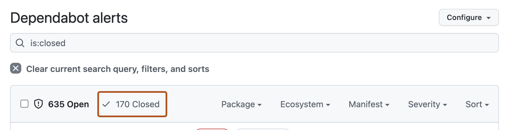
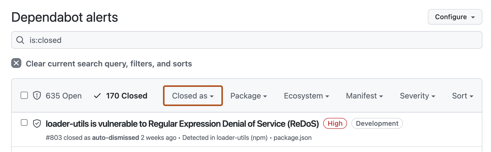
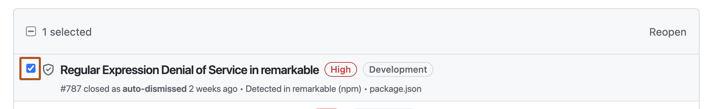

You can filter to see which alerts have been auto-dismissed by a rule, and you can reopen dismissed alerts.
Note
The Dependabot alerts page defaults to showing open alerts. To filter and view auto-dismissed alerts, you must first clear the is:open default filter from the view.
On GitHub, navigate to the main page of the repository.
Under the repository name, click the Security and quality tab. If you cannot see the " Security and quality" tab, select the dropdown menu, and then click Security and quality.
To filter to see all closed alerts, click Closed. Alternatively, use the is:closed filter query in the search bar.

To see all auto-dismissed alerts, select Closed as, then in the dropdown menu, click Auto-dismissed.

To reopen an auto-dismissed alert, to the left of the alert title, click the checkbox adjacent to the alert, then click Reopen.
